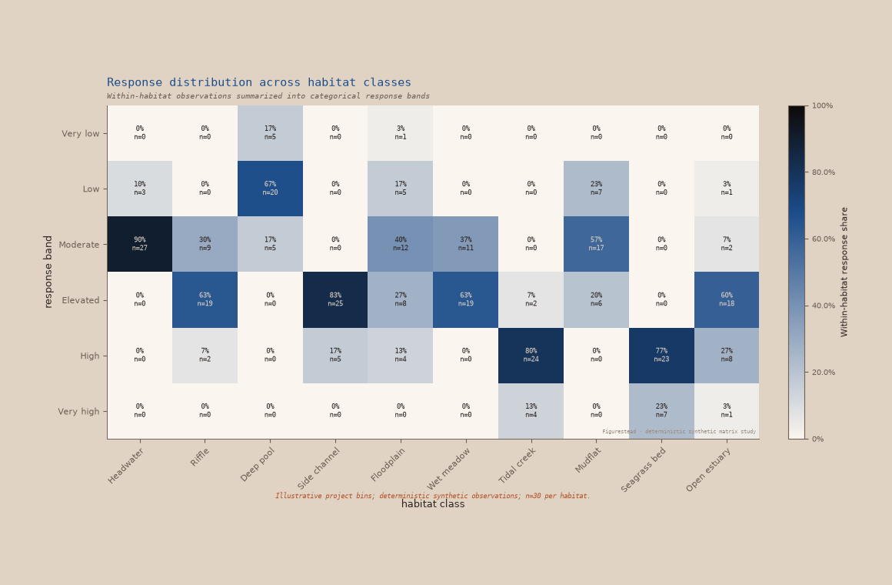

Renderer study
Fourteen problems,
one figure system.
A full laboratory rendering of the deterministic synthetic corpus. Eight accepted showcase scenes test range; one populated response-matrix candidate is under review; five stress cases keep the product boundary visible.
Open the unchanged eight-figure montage · Read v0.2 provenance · Open historical v0.1
01
Showcase pool
Two line, two scatter, two distribution, and two temporal scenes, rendered first in their suggested themes.
02
Response matrix candidate
Ten habitat columns and six response-band rows rendered through the existing Python categorical-matrix extension. It remains outside the accepted montage.
showcase candidate · Slipware

03
Stress fixtures
Dense or awkward conditions retained for evaluation, not folded into the primary montage or promoted as capability claims.